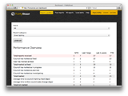
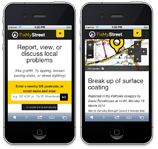

FixMyStreet for Councils
Shift your problem reporting online
FixMyStreet is an award-winning street issue reporting and mapping application.
When integrated directly with councils systems, local authorities can reduce waste and improve customer satisfaction. FixMyStreet will help you reduce costs by moving citizen contact online, eliminating manual data entry, and reducing duplicate reports. As a cloud-based service, it is cost- effective, highly customisable and simple to implement.
-
Key Features
You’ll have technical support from our talented team of developers and a real person you can pick up a phone and call instead of fighting with a faceless call centre.
Read Key Features
-
Pricing Options
Prices range from £????? for a branded version of FixMyStreet; to £?????? for a fully CRM integrated site and mobile apps.
View Pricing Options
-
Case Studies
An A4 PDF with a breakdown of all the facts, prices and contact information you'll need to make a decision.
Download the Datasheet (PDF)
Features All backed by our famously friendly and responsive support team.
-
Core Features:

We know every council is different, so FixMyStreet has a customisable front-end to match your website and reporting requirements. It includes a highly mature, extremely user-friendly user interface which users love, an online map of issues (to prevent duplicate reports) and a reporting dashboard.
-
Mobile

Mobile is a great way to report issues on-the- go. FixMyStreet has been offering apps since 2008, and we’re happy to produce council specific versions. For users who don’t want Android or iPhone apps, we can make your web version of FixMyStreet work in almost any mobile web browser, ensuring that almost anyone with a phone can access the site.
-
Back Office Integration:
We can also link the FixMyStreet cloud service directly to your CRM or problem-handling back-office system, enabling automatic two-way updates to your website. We support direct integration as well as using the open protocol Open311. If you are looking to set up your own Open311 server we can help you with that, too.
-
Back Office Integration:
We can also link the FixMyStreet cloud service directly to your CRM or problem-handling back-office system, enabling automatic two-way updates to your website. We support direct integration as well as using the open protocol Open311. If you are looking to set up your own Open311 server we can help you with that, too.
Pricing: Our charges are all-inclusive, with no hidden extras
-
FixMyStreet Web
First year: £3,500 then £2,000 p.a.
A branded FixMyStreet instance on your site.
-
FixMyStreet Web + Mobile Site
First year: £5,500 then £3,000 p.a.
A branded FixMyStreet instance on your site plus a mobile optimised version of the website.
-
FixMyStreet Web + Mobile Site and Apps
First year: £9,500 then £4,000 p.a.
A branded FixMyStreet instance on your site plus a mobile optimised version of the website and mobile apps for iOS and Android.
Extras: Integration Options
Prices assume integration of standard complexity; very complex or non-standard integrations may cost more.
Case Studies: Our charges are all-inclusive, with no hidden extras
-
Case Study: Barnet Council

Read about how Barnet used the FixMyStreet system to streamline their public issue reporting, and direct integration with their CRM.
Download Case Study
-
Case Study: Barnet Council
Read about how Barnet used the FixMyStreet system to streamline their public issue reporting, and direct integration with their CRM.
Download Case Study
{kind=link}
{kind=link}
{kind=link}